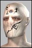

Anarchy Online Bulletin Board > Future Anarchy > Suggestions > A Way to Find Loot outside Missions; Outdoors Hunting; Dyna-camp Ideas etc
Anarchy Online Bulletin Board > Future Anarchy > Suggestions > A Way to Find Loot outside Missions; Outdoors Hunting; Dyna-camp Ideas etc| Pages (8): [1] 2 3 » ... Last » |  Last Thread Next Thread Last Thread Next Thread  |
| Author | Thread |
| Hextorr Phear Leet  Registered: Nov 2001 | A Way to Find Loot outside Missions; Outdoors Hunting; Dyna-camp Ideas etc I am lvl 200 and finaly free from those dreadfull unhealthy mind cripling missions. I hear with 14.2 there will come a serious of new loot like transparent back pieces with good ACs that let you see what you wear underneath, new weapons, new nanos etc etc... If doing team missions and killing the boss is the only way to get this loot, you are forcing me into missions again. I think you should revitalize the outside zones and spwans and give each "family" of Monsters some specific loot. Medusas could have a chance to drops some quind of loot, Cyborgs another kind, etc etc... Please change the focus of this game from Missions to the outside, and don't FORCE us to do missions. Missions were supposed to let us get some normal equipment and some cash, it turns out we do all the exping in there too... the whole game is based on missions wich is very damaging to this game. You know the Decranus MK II armor is only available in the Smuglers den, well, you could make Medusas in Deep Artery Valley, or in Eastre Fouls Plains, have some drop rate for some kind of loot... You Know the new "Love" armor for Fixers http://auno.org/aodb.php?t=ag&cmd=view&id=160832 well, i bet they plan on doing it boss loot, but it would be so much better if they made a outside spwan for it, maybe drop out of some Shady types, make a small village for them and you go there raid the place, make it big enough so it can handle some teams at same time. or you could even do the "Love's Workshop" Dungeon. The thing is Normal/Team missions should be for single/teams to get regular items and and fast cash/exp... althou i would like to see the exp reward removed and the exp for the outside mobs raised oo... but thats a diferent thing. All the Spetial loot should drop from Outside Spawns and have a meaning... There should be well defined "families" of Monsters/npc with their own defines habitat and loot... If you Force me to keep playing inside missions i will have to quit.. i just know it, and this game has so much potential, i realy dont want too. P.S. I'm not asking for Unique drops, i am asking for big spwans of creatures witha meaning and an History and a defined habbitat where you can get nice loot, specific loot, and good experience too. Hextorr, Level 200 Fixer Last edited by Hextorr on May 11th, 2002 at 03:03 |
 May 6th, 2002 00:38 May 6th, 2002 00:38 | #1 |
| Maxtor 1-7 Phear Leet Registered: Nov 2001 | I like it a bit, but it pushes FC into a problem. If these were spawning in normal hunting grounds power-lvlers would be able to get them. If they spawned in dungens that would be a lot better, since you should do more work to get unique items, thats why they put so many things in missions. Maybe they should build a dungen with no bosses that specializes in spawning unique mision items, or would that just be a bad idea? Maybe if they have bosses they are more likely to hold the unique items... |
| May 6th, 2002 04:33 | #2 |
| Bionitrous Supa Leet  Registered: Jul 2001 | From what I hear on the global Teste Server chat channel EVERYTHING is coming out of the Team Mission. I'm with you as well. Missions are starting to make my eyes bleed. I want something to do out-of-doors that isn't going to be a waste of time or camped with griefers. |
| May 6th, 2002 05:29 | #3 |
| Downsizr Supa Leet  Registered: Nov 2001 | The mission grind is the #1 reason why I canceled my account. I could not stand anyore levelling in the same corridors / caves for days and days. I've tried nearly all zones and all mobs available for a level 110+ and that's just not good enough. Designing outdoor spawns is quite tricky and I just see hordes of packed mobs in some spots and huge stretches of void everywhere else ... Honestly I cannot stand to play EQ anymore, but at least I must admit that Verant managed to do some solid outdoor zones. |
| May 6th, 2002 14:52 | #4 |
| Krneki Supa Leet  Registered: Nov 2001 | quote: Dungeons ARE normal hunting grounds lol! |
| May 6th, 2002 15:00 | #5 |
| Ogiebogie Soleet  Registered: Apr 2002 | High level people will camp low level hunting grounds /places where unique loot might be found etc... This is one of the only problem i see with this idea. sadly. ///// Halofire, 125 levels of pure gimpyness!  |
| May 6th, 2002 15:25 | #6 |
| Sabkor Just some n00b  Registered: Feb 2002 | I think this is one of the major problems with people leaving Anarchy Online. For example, EverQuest as a game wasn't that great, but what kept people coming back?? Their friends. It was easy to make friends in EverQuest, and why? Because it was fairly easy to find groups. Level 20 or so? Go to Oasis, shout a bit, you'll find a group, make new friends. In AO, I don't know about everyone else, but I find it hard to find groups. 90% of the server population spends their time in missions that noone else can go into. There's no spot (like the outposts outside Tir USED to be) that you can go to find a whole bunch of people your level to group with. There isn't anywhere in the game that people go to hunt outside more. Missions are fun, I like em, but we need spots where like levels can meet up, make friends, etc. THAT's what will keep the customer base there and the organizations growing. It used to be this way (Tir outposts, Snake pit in Varmint Woods, OT camps in Varmint Woods, Bully bridge in Varmint Woods, Shades, etc. etc.). But now that nothing spawns anymore outside, no-one bothers.... We NEED more outdoor/dungeon hunting, at ALL levels... The dungeon's that are in the game are FUN places, so why does noone camp them? It all comes back to risk/reward. For example, I lead a dungeon with some clan-mates to the TLR dungeon. We were all ~50, so the whole upper area was green, we thought it'd be a blast. Well, we found out that the mobs there have massively more hps than a regular mission/outdoor mob and give less XP. Risk/reward... We had fun for a little while, but we left and doubt we'll go back... Anyways, just my thoughts... |
| May 6th, 2002 15:28 | #7 |
| Ogiebogie Soleet Registered: Apr 2002 | Its actually its quite funny, you have this VAST online world, literally huge!... and what do people do? they sit infront of a Mission terminal, using outside progs to get the items they want (yes i have sined, i do so myself), Until they find the thingy they want, or know they can sell (more about selling late  ). Great, now we go to BS (broken shores for those who might not know ). Great, now we go to BS (broken shores for those who might not know  ) and find us a team, and do this sogging mission, i get XP and my supaaa item. great!!!! ) and find us a team, and do this sogging mission, i get XP and my supaaa item. great!!!!UBA!!! SUPA!!! like a friend used to say "STICKY!!!! LOVE!!!! RAIN!!!" (never mind that... its just babble, about a ingame gun) Another thing. Since people are doing missions, getting supaa loot, etc, this has boosted the economy on RK1 (dont know how conditions are on RK2... :/ ), makeing it impossible for a hunter (ie someone who hunts instead of missioning) to get new items, UNLESS he does some missions... Buy them? Yeah, i would like to see someone doing that, that only hunts and not pre-funded by a higher level char. prices are insane nowadays, for anything. Like is aid, this because people are makeing alot of money selling the supaaa loot, or just selling junk from missions to a shop. seems to me, only three zones exist for lvl 100+ players. TIR/OMNI-1 - GRID - BS and the ocassional static dungeon. great. hurrah. BAH i tell you... //// halofire, comes with built in glasses. |
| May 6th, 2002 15:45 | #8 |
| Vandegraf Leetas  Registered: Apr 2002 | Well....PVP is always an Option..... But indeed....some outdoor hunting/areas need to be created....that might mean a whole bunch of new restrictions implemented like EQ has.... I have played EQ for the longest and it is incredibly slow...you do not find anything you can use at your level...and everything is overcamped...they have that trivial loot code crap thats going to happen sooner or later if it didnt already.... Funcom, would have to implement more No Drop stuff from outdoor mobs to prevent over farming of them... The realm is huge....I think if they put themselves to it....they could do some very cool outdoor areas.... In the end, yes...more outdoor hunting.....gauged for certain levels....and perhaps some appropriate restrictions... |
| May 6th, 2002 18:39 | #9 |
| Customer Soleet  Registered: Apr 2002 | The solution is very simple. part 1: seperate mobs by level range. FC did a decent job up to level 80ish, then got bored and randomized all the higher level zones. It's time to tidy up the world into a playable game; greys, yellows, and dark reds should not be herding together. Use the NW cave in lush fields as a template. Everybody cites this as the best example of what the outdoor game should be. Decent sized area with similar-level mobs and a landmark to assemble at. For fun/chaos a Lifebleeder shows up every so often, but a team of 6 should be able to survive the encounter. This is not the case at 100+ You have level 120 mobs standing right next to level 180 mobs and everything in the whole zone is aggro so you get multiple mobs of all different families and it just doesnt work. There is no room for strategy, pulling, teamwork, anything. The mobs are too dense and it's just a big totally random mess. You dont need to create new zones or change the landscape, just alter the locations of mob spawns and the range they wander. FC have done this many times before to nerf certain areas. Use that power now to enchance the highlevel game. part 2: give us more outposts and save terminals It's hard enough to keep a team together without expecting people to fly 20minutes back from reclaim upon each death. It's just unrealistic. We need a safe spot to LFG and save/reclaim. That is where all hunting partys start. Noone is going to bother risking hours of XP when they can step outside the door of a BS mission and save 10 feet away. Of course, the highlevel outdoor zones are mostly 25%/0% zones. So these outposts must be 100% gas and there must be seperate bases for Clan and Omni. We get into the problem of ganking, griefing, etc and lots of people dont like PvP at all, but I would tolerate the occasional enemy attack for the enjoyment of not being stuck in a cave or office. As long as you provide LOTS of different hunting grounds then any PvP should at least get spread out a bit. Unlike the EFP Aces camp which is one single central location to attack. People have also suggested and EXP bonus for hunting in 25% and 0% zones. I like this idea too, because there will be more deaths outdoors. So it would help to balance out the pace of those who prefer outdoor to indoor. |
| May 7th, 2002 03:02 | #10 |
| Hextorr Phear Leet Registered: Nov 2001 | One other solution to end kill greifing is if the player did 51% of the dmage then tere is no exp loss You can also make the mobs outside not drop anything unless maybe a few credits if the xp they give is 1xp... this would end over camping of low items by high lvls. If you realy needed to farm something for a lower character us that character or run a normal mission. I want the pleasure of Hunting... go outside and hunt stuff, fun places, Fun dungeos, and come home with some time well spent and some nice loot. Think UO why did people hunt this and that areas? cause it was different experiences, it was diferent loot, it was good. and btw UO was one huge 0% zone and people didnt kill eachother at first sighting, there are ways to make things work. I wich they could do somethign about it next patch, the new whompa/grid system can improve traveling greatly, put some save terminals arround the world, fix the spwan, fix the loot, put some rules in place and you have a thriving world with ahppy gamers. There is so much land in AO, that if you do your spwans right, nothing will be over camped. Of course if you have a big area like mort and then give it two decent spwans only, those spwans will be over camped. The lvl range of the mobs in the whole area varies too much, the areas should be more organised spwan wise. It can be done, it must be done, if not it will be the demise of AO |
| May 7th, 2002 09:39 | #11 |
| cold Supa Leet Registered: Nov 2001 | I almost agree. Putting specific loot on specific mobs is a bad solution, I like my loot available in all QL ranges. I want those new web cloaks in a decent QL but if they're only available in team missions they will not be accessible to me. The average team can't do team missions over 50% or so (including the boss anyway), and I need armor over my level in QL. Solution : all kinds of loot on all kinds of mobs. More loot outdoors on monsters. Much more. For hunting to be more attractive than missions I should be able to get, say, a good suit of armor in a few days. Right now, missions give good xp AND better loot than outside hunting, which is bad. Missions should be an option. Right now you can't do without, and it's getting worse. If you need to promote missions by putting unique loot in there then there's something wrong with them. |
| May 7th, 2002 11:42 | #12 |
| Venekar Leetas Registered: Mar 2002 | Yes, there definetely needs to be something done. I remember when this game started it was easy to find a group and hunting partys were everywhere. Now it is all missions, and missions bore the hell out of me. I agree that reorganizing outdoor spawns is a good idea. I also think that the mobs should be a bit more spread out as well, and not all be in camps. (What I mean to say is have a given level range of mobs in a reigon, but have those mobs wander around a bit. Some camps are fine, but it shouldn't be (as someone else mentioned) 2 camps and the rest desolation) I also agree that xp bonuses should be given for 25% zones. If this brings clan and omni into confict...GREAT! This IS a bloody war, after all. I further propose that xp bonuses be given for more remote or dangerous areas. (The farther away from civilization, and the more "mixed" the mobs are, the more xp). Jack up the outdoor loot-o-matic. Make good loot spawn randomly on outdoor mobs, with a decent percentage of occurance. I would also suggest that the more remote/dangerous the area, the better the loot should be. DON'T make the same loot always spawn on the same mobs. (Asheron's Call did a pretty good job with their loot system. Once you hit the high-end game, pretty much everything u killed had the chance to drop something good. Some monsters tended to drop better loot then others, but the actual TYPE of loot tended to be pretty random). Ah well, that's my 2c worth |
| May 7th, 2002 13:33 | #13 |
| Hextorr Phear Leet Registered: Nov 2001 | http://forums.anarchy-online.com/sho...threadid=24015 i have a poll running on what people think of missions, so far 63.04% of the people have various degrees of hate towards missions 21.74% dont mind about them (in my view these are future mission haters) and 15.22% say they love em; fine they are there for them, now give us other choices to the ones of us that dont want to be inside them all the time, im not asking for a mission nerf, just asking not to force us inside missions if we dont want to. Making Dungeon mobs have more reward/or less HP would be a start, if anyone played UO, you know dungeons are a part of getting experince as well as loot. and theywere chalenging!! Fun challenges!! they were big too... multi leveled, increasing dificulty... lvl ranges etc etc... specific loot, some mobs droped more of this stuff, other more of that stuff, but there wasnt camping cause drops were random within a certain spectrum of loot |
| May 8th, 2002 03:36 | #14 |
| Lodrin-Omni Soleet Registered: Mar 2002 | quote:EQ as a world was rich. It was large with many zones, dynamic, purposeful, and varied alot. You'd have underwater areas, deserts, winter areas, lava areas, dungeons, etc... npcs with ongoing stories and quests. I agree the gameplay was poor, but the world was conducive to making those friends, and it was interesting. There was some purpose behind every spawn, every camp setup. There isn't any in AO. Even if there is, the relation is so weak, and almost compeltely imperceptible. Missions are team mission loot are a cop out. Instead of taking the time to design balanced leveling areas, meaningful spawn setups, they just leave it all to random. Everything to random. There is still no purpose. I've been going back and forth between EQ and AO, about 3 times now. They both have strengths and weaknesses. I play one game till I can't stand the weaknesses anymore, and go play the other. When that happens again, I go bac... I hate EQ for the god-awful tedious leveling that leads to being level 60 and still being a weakling, as well as the too basic gameplay and suffering. I hate how long it takes to get anything going in EQ, how you need to take 50 people just to get a loot that will BARELY make you any better. I hate AO for its lackluster, pointless world and 'exploit of the week' crap that goes around. The bugs don't help at all. I love EQ for it's beautiful, in depth world, the purpose and story behind it. I love AO for it's quick progression, great graphics, and the character development system. |
| May 8th, 2002 04:41 | #15 |
| Kinkstaah unimpressed by your post  Registered: Jun 2001 | Hey Hex.. I have the same problem. Any teams looking for a Ninjalooting Enf and Fixer for team missions?  |
| May 8th, 2002 06:24 | #16 |
| Hajkster Supa Leet Registered: Mar 2002 | Mobs at the camping fire npc monsters animals what ever it could be cool |
| May 8th, 2002 08:34 | #17 |
| Hextorr Phear Leet Registered: Nov 2001 | quote:hehe maybe we can beg players to let us team with them Hextorr shouts: lvl 200 Fixer and Enforcer LFG Team member#1: Wtf, these lvl 200 are wierdos, dont they have anything else to do, they dont need exp anymore why they want to go in boring missions Team member#2: Beats me, baybe they went crazy with all the missions... say maybe we shouldnt do so many missions ourselves, wanna go kill outside? team member#3: I want Exp!! go outside are you nuts? team member#4: Hey i want me uber loot, there is nothing outside!! Team member#5: Outside? i thought this was the game, "Missions Online" isnt it? you go to the mission booth get a mission, go to the mission do the mission, get back to the mission booth get a mission... *starts to drool and blink one eye in a nervous twich* |
| May 8th, 2002 10:33 | #18 |
| tiitii Eleet  Registered: Feb 2002 | i would like to see greater encouragement for outdoor hunting, once u exhaust the hunting grounds at PM, there isnt much to do at level 80+. i used to hear groups yelling for teams for ninjas, aces, and meds, so i leveled up, did missions to earn cash and improve my equipment, now i'm redy for high level hunting...but it doesnt exist!! the whole crowd at 20K no longer gathers at the gate, but sits in front of mission terms...this sucks!! well, i will still try to organize groups to go hunting, but it is really more just for fun, not a viable way to earn experience or gain unique loot. took the time to organize a team to hunt in milky way, killing some chaosminions and blasterbeetles...then this huge desert eremite pops out of the sand and wipes out the team...heh that was a memorable experience, but after the time to organize a team and it gets wiped out that quickly...well without some hunting grounds that are somewhat more predictable it is nearly impossible to keep a high level team together for hunting so, form another team to try aces...PVP zone...gank....team disband again.... i would like to see any sort of incentive for people to team for outdoors hunting...25% zones are fine if there is a significant xp gain for hunting in them, but please have some 75% zones with decent hunting for the majority of players that don't want to get ganked when they are out enjoying themselves... i like the idea of somewhat predictable loot falling off outdoor mobs. need to upgrade your armor? well cyborgs drop good armor. u need nanos? meds in efp drop some rare nanos. implants are what u need? well the ace doctors drop some juicy implants and nano clusters. i want to see someone yell 'NEED TEAM TO HUNT DESERT EREMITE IN PROWLER WASTES SO I CAN UPGRADE MY PRIMUS COAT!' ...not lvl 100+ team forming, have QL 170 mission at eye camp... |
| May 8th, 2002 11:24 | #19 |
| Wildwal Supa Leet  Registered: Nov 2001 | agreed, this is one of the best looking mmorpg's and games in my opinion, but all i ever see is table table door door let us out!!!!!!! p.s. my pets vote for outside hunting too... as long as it involves no tables. |
| May 8th, 2002 12:04 | #20 |
| Pages (8): [1] 2 3 » ... Last » | The saved copy (Funcom's forum archive, saved by the Wayback Machine in 2025) |
All times are GMT.